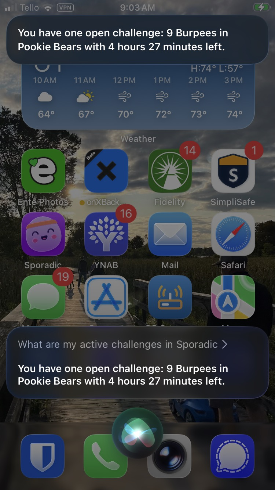

Siri Support
Now you can interact with Sporadic through Siri.
Just say "Hey Siri!" or whatever your method is for summoning Siri, and try asking "What are my active challenges in Sporadic?"

Smaller changes
- Try completing your challenge through Siri as well! Newer phones with Apple Intelligence will have an easier time with the wording.
- Check out the Shortcuts app to view some of the underlying skills that Siri is using with Sporadic.
How to get it
Update Sporadic from the App Store. If you have automatic updates on, you might already have it!
Not on Sporadic yet? Try it free.
Get up. Get Active. Get Sporadic!